Objetos
Los 783 objetos del juego: materiales, bloques, herramientas, armas y equipo.
| Nombre | Categoría | Tipo | Resumen | Se consigue | |
|---|---|---|---|---|---|
 | Aceite impermeable | Material | Material | Botín | |
 | Aciano | Material | Material | Minería | |
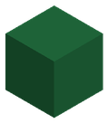 | Acículas de pino | Bloque | Bloque | Minería | |
 | Adamantio carmesí | Material | Material | Minería | |
 | Adobe | Bloque | Bloque | Fabricación, Minería | |
 | Adoquín | Bloque | Bloque | Fabricación, Minería | |
 | Aerolita | Material | Material | Minería | |
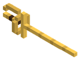 | Aguijón Real de Vespis | Arma | Cuerpo a cuerpo | Daño 14 · cada 0,38 s | Botín |
 | Aguijón de Manticora | Material | Material | Botín | |
 | Ajo Blanco | Material | Comida | Cura 2 | Cultivo |
 | Alabarda de Fulgurita y Tormentita | Arma | Cuerpo a cuerpo | Daño 240 · cada 0,45 s | Fabricación |
 | Alabarda de Jade Ancestral | Arma | Cuerpo a cuerpo | Daño 38 · cada 0,72 s | Fabricación |
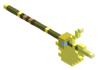 | Alabarda del Relámpago Celeste | Arma | Cuerpo a cuerpo | Daño 268 · cada 0,45 s | Botín |
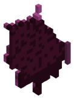 | Alas Corruptas del Abismo | Equipo | Alas o capa | Armadura 46 · Daño 0,15 | Botín |
 | Alas de Aerolita Gravitatoria | Equipo | Alas o capa | Armadura 22 | Fabricación |
 | Alas de Cuero y Costillas de Hierro | Equipo | Alas o capa | Armadura 8 | Fabricación |
 | Alas de Dragón Carmesí | Equipo | Alas o capa | Armadura 40 · Daño 0,15 | Fabricación |
 | Alas de Gravitón Puro y Polvo Astral | Equipo | Alas o capa | Armadura 60 | Fabricación |
 | Alas de Membrana y Cobre Ligero | Equipo | Alas o capa | Armadura 3 | Fabricación |
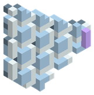 | Alas de Mithril y Céfiro | Equipo | Alas o capa | Armadura 28 | Botín |
 | Alas de Mithril y Plumas de Fénix | Equipo | Alas o capa | Armadura 30 | Fabricación |
 | Alas de Nácar Marino | Equipo | Alas o capa | Armadura 12 | Fabricación |
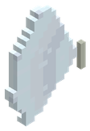 | Alas de Nácar y Seda Marina | Equipo | Alas o capa | Armadura 30 | Botín |
 | Alas de Oricalco del Arcángel Mayor | Equipo | Alas o capa | Armadura 48 · Vida 120 | Fabricación |
 | Alas de Seda Selvática y Titanio | Equipo | Alas o capa | Armadura 15 | Fabricación |
 | Alas de la Aurora del Génesis | Equipo | Alas o capa | Armadura 85 · Vida 200 | Fabricación |
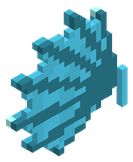 | Alas de la Marea del Leviatán | Equipo | Alas o capa | Armadura 48 | Botín |
 | Alas de la Marea del Leviatán | Equipo | Alas o capa | Armadura 42 | Fabricación |
 | Alas de tela | Equipo | Alas o capa | Fabricación | |
 | Alas del Arcángel | Equipo | Alas o capa | Armadura 35 · Vida 60 · Daño 0,2 | |
 | Alas del Dragón | Equipo | Alas o capa | Armadura 25 · Daño 0,15 | |
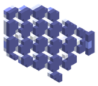 | Alas del Vuelo Infinito de Gravitón | Equipo | Alas o capa | Armadura 64 | Botín |
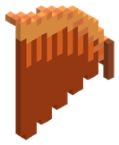 | Alas Ígneas | Equipo | Alas o capa | Armadura 32 | Botín |
| Alas Ígneas de Basalto | Equipo | Alas o capa | Armadura 34 | Botín | |
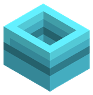 | Aletas de Nado Rápido | Equipo | Botas | Armadura 6 | Botín |
 | Aletas de Nácar de las Mareas | Equipo | Botas | Armadura 9 | Fabricación |
 | Alga marina | Bloque | Bloque | Minería, Botín | |
 | Altar de la Creación | Bloque | Bloque | Fabricación, Minería | |
| Amatista Resonante Perfecta | Material | Material | Botín | ||
 | Amatista resonante | Material | Material | Minería | |
 | Amuleto de Cristal Espejismo | Equipo | Amuleto | Fabricación | |
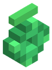 | Amuleto de Esmeralda | Equipo | Amuleto | Vida 50 | Botín |
 | Amuleto de Jade Imperial | Equipo | Amuleto | Armadura 10 · Vida 25 | Fabricación |
 | Amuleto de Plata Purificada | Equipo | Amuleto | Fabricación | |
| Amuleto de Regeneración Rápida | Equipo | Amuleto | Vida 60 | Botín | |
 | Amuleto de cristal | Equipo | Amuleto | Vida 15 · Maná 25 · Daño 0,05 | Fabricación |
 | Amuleto de la Perla del Leviatán | Equipo | Amuleto | Armadura 20 · Vida 150 | Fabricación |
 | Amuleto del Prisma Solar | Equipo | Amuleto | Vida 200 | Fabricación |
 | Anguila Corrosiva de Vitriolo | Material | Comida | Cura 55 | Pesca |
 | Anguila Corrosiva de Vitriolo a la Brasa | Material | Comida | Cura 138 | Fabricación |
 | Anguila de Azufre | Material | Comida | Cura 14 | Pesca |
 | Anguila de Azufre a la Brasa | Material | Comida | Cura 35 | Fabricación |
 | Anguila del Vórtice del Vacío | Material | Comida | Cura 80 | Pesca |
 | Anguila del Vórtice del Vacío a la Brasa | Material | Comida | Cura 200 | Fabricación |
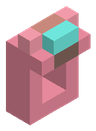 | Anillo de Coral Refinado | Equipo | Anillo | Vida 25 | Botín |
| Anillo de Cristal Espejismo | Equipo | Anillo | Botín | ||
 | Anillo de Cristal de Sombra | Equipo | Anillo | Fabricación | |
 | Anillo de Cuarzo Lechoso | Equipo | Anillo | Maná 12 | Fabricación |
 | Anillo de Electro Divino | Equipo | Anillo | Fabricación | |
 | Anillo de Esmeralda de la Selva | Equipo | Anillo | Vida 60 | Fabricación |
 | Anillo de Fulgurita de la Velocidad de la Luz | Equipo | Anillo | Fabricación | |
 | Anillo de Gravitón Universal | Equipo | Anillo | Fabricación | |
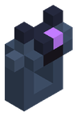 | Anillo de Hielo Negro | Equipo | Anillo | Daño 0,08 | Botín |
 | Anillo de Lapislázuli Arcano | Equipo | Anillo | Maná 25 | Fabricación |
 | Anillo de Magnetita Polar | Equipo | Anillo | Daño 0,05 | Fabricación |
 | Anillo de Pirita Ígnea | Equipo | Anillo | Fabricación | |
 | Anillo de Platino Reflector | Equipo | Anillo | Armadura 25 | Fabricación |
 | Anillo de Rubí del Fénix | Equipo | Anillo | Daño 0,05 | Fabricación |
 | Anillo de Sangre de Hierro | Equipo | Anillo | Daño 0,1 | Fabricación |
 | Anillo de Topacio de Tormenta | Equipo | Anillo | Fabricación | |
 | Anillo de Turquesa Firme | Equipo | Anillo | Armadura 8 | Fabricación |
 | Anillo de Zafiro del Archimago | Equipo | Anillo | Maná 120 | Fabricación |
 | Anillo de coral | Equipo | Anillo | Vida 10 | Fabricación |
 | Anillo de cristal | Equipo | Anillo | Fabricación | |
 | Anillo de hierro | Equipo | Anillo | Daño 0,05 | Fabricación |
 | Anillo de la Cronolita Eterna | Equipo | Anillo | Fabricación | |
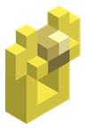 | Anillo de los Cien Relámpagos | Equipo | Anillo | Botín | |
 | Anillo de Ámbar de Vigor | Equipo | Anillo | Vida 15 | Fabricación |
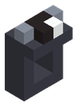 | Anillo del Gólem Magnético | Equipo | Anillo | Daño 0,06 | Botín |
 | Arapaima Gigante | Material | Comida | Cura 22 | Pesca |
 | Arapaima Gigante a la Brasa | Material | Comida | Cura 55 | Fabricación |
 | Arcilla roja | Material | Material | Minería | |
 | Arco | Arma | Arco | Daño 10 · cada 0,5 s | Fabricación |
 | Arco Astral de las Constelaciones | Arma | Arco | Daño 220 · cada 0,4 s | Fabricación |
 | Arco Celeste de Aerolita y Mithril | Arma | Arco | Daño 62 · cada 0,48 s | Fabricación |
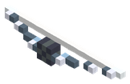 | Arco Celeste de los Siete Vientos | Arma | Arco | Daño 235 · cada 0,4 s | Botín |
 | Arco Corto de Fresno y Cobre | Arma | Arco | Daño 9 · cada 0,52 s | Fabricación |
 | Arco Estigio de Hielo Negro | Arma | Arco | Daño 125 · cada 0,55 s | Fabricación |
 | Arco Recurvo Reforzado de Hierro | Arma | Arco | Daño 16 · cada 0,58 s | Fabricación |
 | Arco Solar de Oro y Topacio | Arma | Arco | Daño 33 · cada 0,52 s | Fabricación |
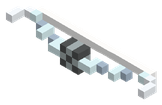 | Arco de Viento Puro | Arma | Arco | Daño 75 · cada 0,48 s | Botín |
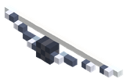 | Arco de la Vía Láctea | Arma | Arco | Daño 240 · cada 0,4 s | Botín |
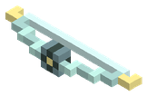 | Arco del Viento Veloz | Arma | Arco | Daño 38 · cada 0,45 s | Botín |
 | Arena | Bloque | Bloque | Minería | |
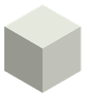 | Arena vitrificada | Bloque | Bloque | Minería | |
 | Arenisca | Bloque | Bloque | Minería | |
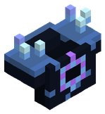 | Armadura de Presión Hadal | Equipo | Pechera | Armadura 152 · Vida 620 | Botín |
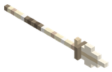 | Arpón de Hueso de Escila | Arma | Cuerpo a cuerpo | Daño 12 · cada 0,58 s | Botín |
 | Arpón de Obsidiana Marina | Arma | Cuerpo a cuerpo | Daño 50 · cada 0,55 s | Botín |
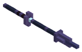 | Arpón de Obsidiana del Ocaso | Arma | Cuerpo a cuerpo | Daño 74 · cada 0,55 s | Botín |
 | Arroz | Material | Comida | Cura 3 | Cultivo |
 | Astralita | Material | Material | Minería | |
 | Azadón de Cobre Forjado | Herramienta | Herramienta | Grado 1 | Fabricación |
 | Azadón de Hierro Templado | Herramienta | Herramienta | Grado 2 | Fabricación |
 | Azadón de Madera | Herramienta | Herramienta | Grado 0 | Fabricación |
 | Azadón de Titanio Ligero | Herramienta | Herramienta | Grado 3 | Fabricación |
 | Azufre | Material | Material | Minería, Botín | |
 | Bacalao Glacial Milenario | Material | Comida | Cura 22 | Pesca |
 | Bacalao Glacial Milenario a la Brasa | Material | Comida | Cura 55 | Fabricación |
 | Ballesta | Arma | Arco | Daño 22 · cada 1,2 s | Fabricación |
 | Ballesta Perforante de Bauxita | Arma | Arco | Daño 58 · cada 1,3 s | Fabricación |
 | Ballesta Pesada de Acero y Madera | Arma | Arco | Daño 28 · cada 1,15 s | Fabricación |
 | Baluarte de Obsidiana del Vacío | Equipo | Mano secundaria | Armadura 65 | Fabricación |
 | Baluarte de Sangre de Hierro | Equipo | Mano secundaria | Armadura 32 | Fabricación |
 | Banco de trabajo | Bloque | Bloque | Fabricación, Minería | |
 | Banquete del Cazador Colosal | Material | Comida | Cura 120 | Fabricación |
 | Banquete del Titán del Abismo | Material | Comida | Cura 300 | Fabricación |
 | Barbo de Otoño | Material | Comida | Cura 8 | Pesca |
 | Barbo de Otoño a la Brasa | Material | Comida | Cura 20 | Fabricación |
 | Barril de Fermentación de Roble | Bloque | Bloque | Fabricación, Minería | |
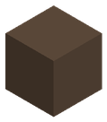 | Barro | Bloque | Bloque | Minería | |
 | Barrotes | Bloque | Bloque | Fabricación, Minería | |
 | Basalto | Bloque | Bloque | Minería | |
 | Bastón de Tormenta de Electro Natural | Arma | Bastón mágico | Daño 70 · cada 0,6 s | Fabricación |
 | Bastón de fuego | Arma | Bastón mágico | Daño 20 · cada 0,4 s | Fabricación |
 | Bastón de hielo | Arma | Bastón mágico | Daño 14 · cada 0,45 s | Fabricación |
 | Bastón de la naturaleza | Arma | Bastón mágico | Daño 6 · cada 0,7 s | Fabricación |
 | Bastón de las sombras | Arma | Bastón mágico | Daño 12 · cada 0,5 s | Fabricación |
 | Bastón del rayo | Arma | Bastón mágico | Daño 16 · cada 0,6 s | Fabricación |
 | Bauxita | Material | Material | Minería | |
 | Bayas | Material | Material | Minería, Botín | |
 | Bayas Azules | Material | Comida | Cura 3 | Cultivo |
| Bayas Dulces | Material | Comida | Cura 3 | Cultivo | |
 | Bota Vieja de Cuero | Material | Material | ||
 | Botas Acorazadas de Adamantio | Equipo | Botas | Armadura 38 · Vida 120 | Fabricación |
 | Botas de Acero Templado | Equipo | Botas | Armadura 6 | Fabricación |
 | Botas de Bronce de Conquistador | Equipo | Botas | Armadura 4 | Fabricación |
 | Botas de Cazador Oscuro | Equipo | Botas | Armadura 16 | Fabricación |
 | Botas de Cobre Minero | Equipo | Botas | Armadura 2 | Fabricación |
 | Botas de Garras Dracónicas | Equipo | Botas | Armadura 35 | Fabricación |
 | Botas de Magma | Equipo | Botas | Armadura 24 | Fabricación |
 | Botas de Obsidiana del Verdugo | Equipo | Botas | Armadura 14 | Fabricación |
 | Botas de Plata del Cruzado | Equipo | Botas | Armadura 5 | Fabricación |
 | Botas de Plomo del Alquimista | Equipo | Botas | Armadura 7 | Fabricación |
 | Botas de Titanio del Explorador | Equipo | Botas | Armadura 11 | Fabricación |
 | Botas de cuero | Equipo | Botas | Armadura 2 | Fabricación |
 | Botas de hierro | Equipo | Botas | Armadura 6 | Fabricación |
 | Botas del Dragón | Equipo | Botas | Armadura 18 | |
 | Botas del Relámpago | Equipo | Botas | Armadura 47 | Fabricación |
 | Botas del Vástago Solar | Equipo | Botas | Armadura 32 | Fabricación |
 | Botas del Vórtice | Equipo | Botas | Armadura 52 | Fabricación |
 | Brocheta de Carne Asada | Material | Comida | Cura 24 | Fabricación |
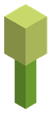 | Brote de Bambú | Material | Comida | Cura 4 | Cultivo |
| Báculo Armónico de Amatista | Arma | Bastón mágico | Daño 160 · cada 0,6 s | Botín | |
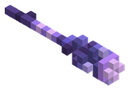 | Báculo del Chamán Fúngico | Arma | Bastón mágico | Daño 72 · cada 0,7 s | Botín |
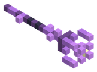 | Báculo del Sonido Armónico | Arma | Bastón mágico | Daño 150 · cada 0,6 s | Botín |
 | Cabeza de Cerdaloth | Material | Material | Botín | |
 | Cabeza de Manticora | Material | Material | Botín | |
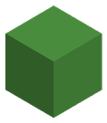 | Cactus | Bloque | Bloque | Minería | |
 | Caja | Bloque | Bloque | Fabricación, Minería | |
 | Calabaza | Material | Comida | Cura 6 | Cultivo |
 | Calamar Colosal del Leviatán | Material | Comida | Cura 55 | Pesca |
 | Calamar Colosal del Leviatán a la Brasa | Material | Comida | Cura 138 | Fabricación |
 | Calamar Gigante de Tinta | Material | Comida | Cura 22 | Pesca |
 | Calamar Gigante de Tinta a la Brasa | Material | Comida | Cura 55 | Fabricación |
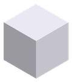 | Calcita | Bloque | Bloque | Minería | |
 | Calcopirita | Material | Material | Minería | |
 | Caldero de alquimia | Bloque | Bloque | Fabricación, Minería | |
 | Caliza | Bloque | Bloque | Minería | |
 | Calzado del Firmamento | Equipo | Botas | Armadura 60 · Vida 250 | Fabricación |
 | Calzas Umbrías del Ocaso | Equipo | Pantalones | Armadura 32 | Fabricación |
 | Calzas de cuero | Equipo | Pantalones | Armadura 4 · Vida 5 | Fabricación |
 | Cangrejo Azul Costero | Material | Comida | Cura 8 | Pesca |
 | Cangrejo Azul Costero a la Brasa | Material | Comida | Cura 20 | Fabricación |
 | Capa Planeadora de Plumas y Lino | Equipo | Alas o capa | Fabricación | |
 | Capa de Viento de la Sabana | Equipo | Alas o capa | Fabricación | |
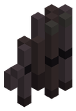 | Capa de las Sombras | Equipo | Alas o capa | Botín | |
 | Caparazón de Karkinos | Material | Material | Botín | |
| Caparazón dorado de Khepri | Material | Material | Botín | ||
 | Capucha Sombría del Ocaso | Equipo | Casco | Armadura 20 | Fabricación |
 | Caramelo de insecto | Material | Material | Fabricación | |
 | Carbón | Material | Material | Minería, Botín | |
 | Carne Asada | Material | Comida | Cura 18 | Fabricación |
 | Carne Dracónica | Material | Comida | Cura 10 | Botín |
 | Carne Dracónica Asada | Material | Comida | Cura 60 | Fabricación |
 | Carne cruda | Material | Material | Botín | |
 | Carne de cangrejo real | Material | Material | Botín | |
 | Carpa Dorada | Material | Comida | Cura 8 | Pesca |
 | Carpa Dorada a la Brasa | Material | Comida | Cura 20 | Fabricación |
 | Casco de Titanio del Explorador | Equipo | Casco | Armadura 14 · Vida 20 | Fabricación |
 | Cazuela Ácida del Pantano | Material | Comida | Cura 90 | Fabricación |
 | Caña Cósmica del Vacío | Herramienta | Caña de pescar | Fabricación | |
 | Caña Reforzada de Hierro | Herramienta | Caña de pescar | Fabricación | |
 | Caña Rúnica de Mithril | Herramienta | Caña de pescar | Fabricación | |
 | Caña de Adamantio y Lava | Herramienta | Caña de pescar | Fabricación | |
 | Caña de Bambú y Estaño | Herramienta | Caña de pescar | Fabricación | |
 | Caña de Plata Marina | Herramienta | Caña de pescar | Fabricación | |
 | Caña de Sauce y Ámbar | Herramienta | Caña de pescar | Fabricación, Botín | |
 | Caña de Titanio y Nácar | Herramienta | Caña de pescar | Fabricación | |
 | Caña de bambú | Bloque | Bloque | Minería | |
 | Caña de pescar | Herramienta | Herramienta | Fabricación | |
 | Cañón de Magma Primigenio | Arma | Arma de fuego | Daño 390 · cada 1,1 s | Fabricación |
 | Cebo Luminiscente de Esporita | Material | Cebo | Fabricación | |
 | Cebolla Morada | Material | Comida | Cura 3 | Cultivo |
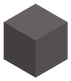 | Ceniza volcánica | Bloque | Bloque | Minería | |
 | Cerveza Artesanal | Material | Comida | Cura 5 | Fabricación |
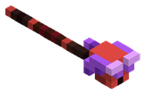 | Cetro de la Sangre de Hierro | Arma | Bastón mágico | Daño 150 · cada 0,5 s | Botín |
 | Chili Ígneo | Material | Comida | Cura 4 | Cultivo |
 | Cimitarra de Cristal Espejismo | Arma | Cuerpo a cuerpo | Daño 52 · cada 0,32 s | Fabricación |
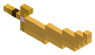 | Cimitarra de Oro y Topacio Solar | Arma | Cuerpo a cuerpo | Daño 46 · cada 0,32 s | Botín |
 | Cimitarra del Sol | Arma | Cuerpo a cuerpo | Daño 36 · cada 0,4 s | Botín |
 | Cinabrio | Material | Material | Minería | |
 | Cirujano Amarillo | Material | Comida | Cura 14 | Pesca |
 | Cirujano Amarillo a la Brasa | Material | Comida | Cura 35 | Fabricación |
 | Cirujano Azul Real | Material | Comida | Cura 14 | Pesca |
 | Cirujano Azul Real a la Brasa | Material | Comida | Cura 35 | Fabricación |
 | Cofre | Bloque | Bloque | Fabricación, Minería | |
 | Colgante de Amatista Resonante | Equipo | Amuleto | Daño 0,1 | Fabricación |
 | Colgante de Vigor Invernal | Equipo | Amuleto | Vida 45 | Botín |
 | Collar de Ámbar del Bosque | Equipo | Amuleto | Fabricación | |
 | Colmillo Curvo | Material | Material | Botín | |
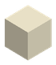 | Colmillo de Cerdaloth | Arma | Cuerpo a cuerpo | Daño 9 · cada 0,3 s | Botín |
 | Colmillo umbrío | Material | Material | Botín | |
 | Colmillos de Abzu | Material | Material | Botín | |
| Colmillos de obsidiana | Material | Material | Botín | ||
 | Concha Espiral Colosal | Material | Material | Botín | |
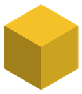 | Coral amarillo | Bloque | Bloque | Minería | |
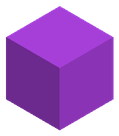 | Coral púrpura | Bloque | Bloque | Minería | |
 | Coral rosa | Bloque | Bloque | Minería | |
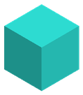 | Coral turquesa | Bloque | Bloque | Minería | |
 | Coraza de Acero Templado | Equipo | Pechera | Armadura 20 · Vida 30 | Fabricación |
 | Coraza de Adamantio | Equipo | Pechera | Armadura 105 · Vida 320 | Fabricación |
 | Coraza de Bronce de Conquistador | Equipo | Pechera | Armadura 12 · Vida 20 | Fabricación |
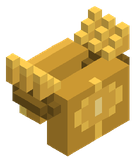 | Coraza de Forjador Real | Equipo | Pechera | Armadura 96 · Vida 240 | Botín |
 | Coraza de Nácar de las Mareas | Equipo | Pechera | Armadura 28 · Vida 30 | Fabricación |
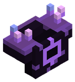 | Coraza de Obsidiana del Vacío | Equipo | Pechera | Armadura 150 · Vida 600 | Botín |
 | Coraza de Obsidiana del Verdugo | Equipo | Pechera | Armadura 42 · Vida 60 · Daño 0,1 | Fabricación |
 | Coraza de Plata del Cruzado | Equipo | Pechera | Armadura 17 · Vida 15 · Maná 35 | Fabricación |
 | Coraza de Plomo del Alquimista | Equipo | Pechera | Armadura 22 | Fabricación |
 | Coraza de Singularidad | Equipo | Pechera | Armadura 145 · Vida 580 | Fabricación |
 | Coraza de Titanio del Explorador | Equipo | Pechera | Armadura 32 · Vida 45 | Fabricación |
 | Coraza de hierro | Equipo | Pechera | Armadura 16 · Vida 20 | Fabricación |
| Coraza de la Singularidad del Vacío | Equipo | Pechera | Armadura 150 · Vida 600 | Botín | |
 | Coraza del Dragón | Equipo | Pechera | Armadura 45 · Vida 80 · Daño 0,1 | |
 | Corazón Colgante de Esporita | Equipo | Amuleto | Vida 60 | Fabricación |
 | Corazón de Hematita | Material | Material | Botín | |
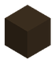 | Corazón de Sulfurita Negra | Material | Material | Botín | |
 | Corazón de basalto | Bloque | Bloque | Minería | |
 | Corazón del Origen | Equipo | Amuleto | Armadura 50 · Vida 500 · Maná 500 · Daño 0,2 | Fabricación |
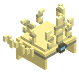 | Corona Celestial | Equipo | Casco | Armadura 60 · Vida 220 · Maná 150 | Botín |
 | Corona Solar de Oricalco | Equipo | Casco | Armadura 38 · Maná 180 | Fabricación |
 | Corona de Nácar de las Mareas | Equipo | Casco | Armadura 12 · Maná 20 | Fabricación |
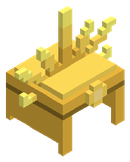 | Corona de Oricalco Solar | Equipo | Casco | Armadura 42 · Maná 220 | Botín |
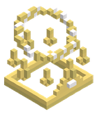 | Corona del Arquitecto del Génesis | Equipo | Casco | Armadura 100 · Vida 400 · Maná 300 · Daño 0,2 | Botín |
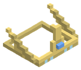 | Corona del Espejismo | Equipo | Casco | Armadura 24 · Maná 90 | Botín |
 | Corona del Origen | Equipo | Casco | Armadura 70 · Vida 300 · Maná 250 | Fabricación |
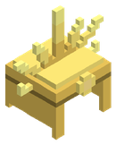 | Corona del Rey de la Atlántida | Equipo | Casco | Armadura 60 · Maná 250 | Botín |
 | Corona del Trueno Divino | Equipo | Casco | Armadura 55 · Vida 180 | Fabricación |
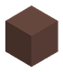 | Corteza de Roble Rúnico | Material | Material | Botín | |
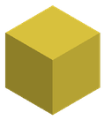 | Costra de azufre | Bloque | Bloque | Minería | |
 | Cota de Malla de Mithril | Equipo | Pechera | Armadura 52 · Vida 50 · Maná 100 | Fabricación |
 | Cristal | Bloque | Bloque | Fabricación, Minería | |
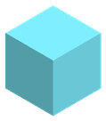 | Cristal de espiga cian | Bloque | Bloque | Minería | |
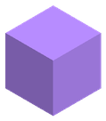 | Cristal de espiga violeta | Bloque | Bloque | Minería | |
 | Cristal de sombra | Material | Material | Minería | |
 | Cristal espejismo | Material | Material | Minería | |
 | Cronolita | Material | Material | Minería, Botín | |
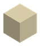 | Cráneo de Fósil Dracónico | Material | Material | Botín | |
 | Cráneo de Wendigo | Material | Material | Botín | |
 | Cuarzo lechoso | Material | Material | Minería | |
 | Cuerda | Material | Material | Fabricación, Botín | |
| Cuerno de Marfil de Titán | Material | Material | Botín | ||
 | Cuero | Material | Material | Fabricación, Botín | |
 | Cuero grueso de jabalí | Material | Material | Botín | |
 | Curry Picante de Lava | Material | Comida | Cura 60 | Fabricación |
 | Daga | Arma | Cuerpo a cuerpo | Daño 7 · cada 0,3 s | Fabricación |
| Daga Cerámica Reforzada | Arma | Cuerpo a cuerpo | Daño 24 · cada 0,25 s | Botín | |
 | Daga Envenenada de Cinabrio | Arma | Cuerpo a cuerpo | Daño 22 · cada 0,22 s | Fabricación |
 | Daga Sigilosa de Calcopirita | Arma | Cuerpo a cuerpo | Daño 11 · cada 0,25 s | Fabricación |
| Daga de Obsidiana del Ocaso | Arma | Cuerpo a cuerpo | Daño 56 · cada 0,2 s | Botín | |
 | Daga de Obsidiana del Ocaso | Arma | Cuerpo a cuerpo | Daño 48 · cada 0,2 s | Fabricación |
 | Daga de Sílex Afilado | Arma | Cuerpo a cuerpo | Daño 5 · cada 0,28 s | Fabricación |
| Daga de Ácido Titánico | Arma | Cuerpo a cuerpo | Daño 95 · cada 0,18 s | Botín | |
 | Dagas Gemelas de Vitriolo Verde | Arma | Cuerpo a cuerpo | Daño 82 · cada 0,18 s | Fabricación |
 | Desgarrador del Vacío | Herramienta | Herramienta | Grado 6 | Fabricación |
| Diadema de Oricalco | Equipo | Casco | Armadura 42 · Maná 200 | Botín | |
 | Diente de sierpe de río | Material | Material | Botín | |
 | Dorado del Espejismo | Material | Comida | Cura 36 | Pesca |
 | Dorado del Espejismo a la Brasa | Material | Comida | Cura 90 | Fabricación |
 | Electro natural | Material | Material | Minería | |
| Engranaje de Mithril | Material | Material | Botín | ||
| Engranajes de Vapor | Material | Material | Botín | ||
 | Ensalada de algas | Material | Material | Fabricación | |
 | Escalera de mano | Bloque | Bloque | Fabricación, Minería | |
| Escama Abisal Indestructible | Material | Material | Botín | ||
| Escama Lunar de Bakunawa | Material | Material | Botín | ||
| Escamas Ingrávidas de Vritra | Material | Material | Botín | ||
| Escamas Iridiscentes | Material | Material | Botín | ||
| Escamas de Corazón de Basalto | Material | Material | Botín | ||
| Escamas de terracota | Material | Material | Botín | ||
 | Escarcha estigia | Material | Material | Minería | |
 | Escarpines de Mithril | Equipo | Botas | Armadura 18 | Fabricación |
 | Escudo Prisma Solar del Demiurgo | Equipo | Mano secundaria | Armadura 50 | Fabricación |
| Escudo Reflector de Platino Marino | Equipo | Mano secundaria | Armadura 30 | Botín | |
 | Escudo Reflector de Platino Puro | Equipo | Mano secundaria | Armadura 28 | Fabricación |
| Escudo Reflector del Sol | Equipo | Mano secundaria | Armadura 52 | Botín | |
 | Escudo Rodela de Caparazón | Equipo | Mano secundaria | Armadura 4 | Fabricación |
 | Escudo de Basalto Ígneo | Equipo | Mano secundaria | Armadura 18 | Fabricación |
 | Escudo de Cometa de Hierro y Mármol | Equipo | Mano secundaria | Armadura 5 | Fabricación |
| Escudo de Concha de Karybdis | Equipo | Mano secundaria | Armadura 56 | Botín | |
 | Escudo de Madera con Borde de Cobre | Equipo | Mano secundaria | Armadura 2 | Fabricación |
 | Escudo de Torre de Bauxita y Jade | Equipo | Mano secundaria | Armadura 12 | Fabricación |
 | Escudo de cometa | Equipo | Mano secundaria | Armadura 4 | Fabricación |
 | Escudo del Dragón | Equipo | Mano secundaria | Armadura 15 · Vida 30 | |
 | Escudo redondo | Equipo | Mano secundaria | Armadura 2 | Fabricación |
 | Esencia del Acuario del Génesis | Material | Material | Botín | |
 | Esencia del Origen | Material | Material | Minería, Botín | |
 | Esmeralda | Material | Material | Minería | |
 | Espada Ancha de Bronce | Arma | Cuerpo a cuerpo | Daño 11 · cada 0,48 s | Fabricación |
 | Espada Corta de Cobre | Arma | Cuerpo a cuerpo | Daño 8 · cada 0,42 s | Fabricación |
 | Espada Destructora de Adamantio | Arma | Cuerpo a cuerpo | Daño 115 · cada 0,45 s | Fabricación |
 | Espada Larga de Acero | Arma | Cuerpo a cuerpo | Daño 16 · cada 0,65 s | Fabricación |
| Espada Rompedora de Eras | Arma | Cuerpo a cuerpo | Daño 400 · cada 0,95 s | Botín | |
 | Espada corta de cristal | Arma | Cuerpo a cuerpo | Daño 13 · cada 0,45 s | Fabricación |
 | Espada corta de hierro | Arma | Cuerpo a cuerpo | Daño 10 · cada 0,45 s | Fabricación |
 | Espada del Génesis | Arma | Cuerpo a cuerpo | Daño 280 · cada 0,35 s | Fabricación, Botín |
 | Espada larga de cristal | Arma | Cuerpo a cuerpo | Daño 19 · cada 0,7 s | Fabricación |
 | Espada larga de hierro | Arma | Cuerpo a cuerpo | Daño 15 · cada 0,7 s | Fabricación |
| Espora Primordial de Mithril | Material | Material | Botín | ||
 | Esporita fosfórica | Material | Material | Minería | |
 | Estofado Glacial de Loto | Material | Comida | Cura 70 | Fabricación |
 | Estoque de Plata Sagrada | Arma | Cuerpo a cuerpo | Daño 13 · cada 0,38 s | Fabricación |
 | Eterio cósmico | Material | Material | Minería | |
 | Fardo de heno | Material | Material | Fabricación | |
 | Farol | Bloque | Bloque | Fabricación, Minería | |
 | Fibra vegetal | Material | Material | Minería, Botín | |
 | Filete de Salmón de Altura con Hierbas | Material | Comida | Cura 45 | Fabricación |
 | Flor amarilla | Material | Material | Minería | |
| Flor de Vitriolo | Material | Material | Cultivo | ||
 | Flor roja | Material | Material | Minería | |
| Follaje de arbusto | Bloque | Bloque | Minería | ||
 | Forja Rúnica | Bloque | Bloque | Fabricación, Minería | |
 | Forja Élfica | Bloque | Bloque | Fabricación, Minería | |
| Fragmento de Corazón de Hielo Azul | Material | Material | Botín | ||
 | Fragmento de cristal | Material | Material | Minería, Botín | |
| Fragmento del Fin del Mundo | Material | Material | Botín | ||
 | Fragua | Bloque | Bloque | Fabricación, Minería | |
 | Frasco de Elixir de Vitriolo | Material | Comida | Cura 400 | Botín |
 | Fruta Astral | Material | Comida | Cura 10 | Cultivo |
 | Fulgurita celeste | Material | Material | Minería | |
 | Fósil dracónico | Material | Material | Minería | |
| Garras de Astralita | Arma | Cuerpo a cuerpo | Daño 230 · cada 0,2 s | Botín | |
| Garras de Bauxita y Titanio | Arma | Cuerpo a cuerpo | Daño 30 · cada 0,22 s | Botín | |
| Garras de Plata Pura | Arma | Cuerpo a cuerpo | Daño 20 · cada 0,35 s | Botín | |
| Garrote Pesado Silvano | Arma | Cuerpo a cuerpo | Daño 14 · cada 0,85 s | Botín | |
 | Gelatina de azúcar | Material | Material | Fabricación | |
| Gorro de Hongo Luminoso | Equipo | Casco | Armadura 24 · Maná 80 | Botín | |
 | Gorro de cuero | Equipo | Casco | Armadura 3 · Vida 5 | Fabricación |
 | Gran Hacha de Fósil Dracónico | Arma | Cuerpo a cuerpo | Daño 210 · cada 1,25 s | Botín |
 | Gran Hacha de Fósil Dracónico | Arma | Cuerpo a cuerpo | Daño 195 · cada 1,25 s | Fabricación |
| Gran Hacha de Hueso Colosal | Arma | Cuerpo a cuerpo | Daño 215 · cada 1,25 s | Botín | |
 | Gran Martillo del Marfil de Titán | Arma | Cuerpo a cuerpo | Daño 450 · cada 1,4 s | Fabricación |
| Grava | Bloque | Bloque | Minería | ||
 | Gravitón puro | Material | Material | Minería, Botín | |
 | Grebas de Acero Templado | Equipo | Pantalones | Armadura 13 · Vida 15 | Fabricación |
 | Grebas de Asedio de Adamantio | Equipo | Pantalones | Armadura 72 · Vida 210 | Fabricación |
 | Grebas de Bronce de Conquistador | Equipo | Pantalones | Armadura 8 · Vida 10 | Fabricación |
 | Grebas de Cobre Minero | Equipo | Pantalones | Armadura 5 · Vida 5 | Fabricación |
 | Grebas de Distorsión | Equipo | Pantalones | Armadura 98 · Vida 380 | Fabricación |
 | Grebas de Escamas Dracónicas | Equipo | Pantalones | Armadura 65 · Vida 180 | Fabricación |
 | Grebas de Lava | Equipo | Pantalones | Armadura 46 · Vida 110 | Fabricación |
 | Grebas de Mithril de los Altos Elfos | Equipo | Pantalones | Armadura 36 · Maná 70 | Fabricación |
 | Grebas de Nácar de las Mareas | Equipo | Pantalones | Armadura 18 | Fabricación |
 | Grebas de Obsidiana del Verdugo | Equipo | Pantalones | Armadura 28 · Vida 35 · Daño 0,05 | Fabricación |
 | Grebas de Plata del Cruzado | Equipo | Pantalones | Armadura 11 · Maná 20 | Fabricación |
 | Grebas de Plomo del Alquimista | Equipo | Pantalones | Armadura 14 | Fabricación |
 | Grebas de Titanio del Explorador | Equipo | Pantalones | Armadura 22 · Vida 25 | Fabricación |
 | Grebas de hierro | Equipo | Pantalones | Armadura 11 · Vida 10 | Fabricación |
 | Grebas de la Centella | Equipo | Pantalones | Armadura 88 · Vida 300 | Fabricación |
 | Grebas del Amanecer | Equipo | Pantalones | Armadura 60 · Maná 150 · Daño 0,1 | Fabricación |
 | Grebas del Dragón | Equipo | Pantalones | Armadura 28 · Vida 40 | |
 | Grebas del Infinito | Equipo | Pantalones | Armadura 110 · Vida 450 · Maná 350 | Fabricación |
| Grieta luminosa | Bloque | Bloque | Minería | ||
 | Guadaña de Cosecha de Cristal de Sombra | Arma | Cuerpo a cuerpo | Daño 105 · cada 0,38 s | Fabricación |
| Guadaña de Escarcha Estigia | Arma | Cuerpo a cuerpo | Daño 125 · cada 0,38 s | Botín | |
 | Guadaña de Obsidiana Negra | Arma | Cuerpo a cuerpo | Daño 42 · cada 0,85 s | Fabricación |
| Guadaña de Singularidad | Arma | Cuerpo a cuerpo | Daño 260 · cada 0,38 s | Botín | |
 | Guijarro | Material | Material | Minería, Botín | |
 | Guiso Tradicional del Pescador | Material | Comida | Cura 20 | Fabricación |
 | Gusano del Vacío Estelar | Material | Cebo | Fabricación | |
 | Hacha Colosal de Fósil Dracónico | Herramienta | Herramienta | Fabricación | |
 | Hacha Divina de Marfil de Titán | Herramienta | Herramienta | Fabricación | |
 | Hacha Glacial de Hielo Azul | Herramienta | Herramienta | Fabricación | |
 | Hacha de Acero al Carbono | Herramienta | Herramienta | Fabricación | |
 | Hacha de Bronce | Herramienta | Herramienta | Fabricación | |
 | Hacha de Jade Imperial | Herramienta | Herramienta | Fabricación | |
 | Hacha de guerra | Arma | Cuerpo a cuerpo | Daño 20 · cada 0,9 s | Fabricación |
 | Hacha de hierro | Herramienta | Herramienta | Fabricación | |
 | Hacha de madera | Herramienta | Herramienta | Fabricación | |
 | Hacha de piedra | Herramienta | Herramienta | Fabricación | |
 | Harina de Trigo | Material | Material | Fabricación | |
 | Hematita | Material | Material | Minería | |
 | Hidromiel | Material | Comida | Cura 10 | Fabricación |
| Hielo azul | Bloque | Bloque | Minería | ||
 | Hielo azul eterno | Material | Material | Minería | |
| Hielo estigio | Bloque | Bloque | Minería | ||
 | Hielo fósil | Material | Material | Minería | |
| Higos | Material | Comida | Cura 6 | Cultivo | |
 | Hoguera | Bloque | Bloque | Fabricación, Minería | |
 | Hoja Rúnica de Mithril | Arma | Cuerpo a cuerpo | Daño 58 · cada 0,4 s | Fabricación |
| Hoja de Obsidiana del Ocaso | Arma | Cuerpo a cuerpo | Daño 72 · cada 0,4 s | Botín | |
| Hojas | Bloque | Bloque | Minería | ||
| Hojas de abedul | Bloque | Bloque | Minería | ||
 | Hongo Fosfórico | Material | Comida | Cura 6 | Cultivo |
 | Horno de Ladrillos y Arcilla Roja | Bloque | Bloque | Fabricación, Minería | |
 | Hueso | Bloque | Bloque | Minería, Botín | |
| Hueso Helado Puro | Material | Material | Botín | ||
 | Huevo de Avestruz | Material | Material | Botín | |
 | Jade imperial | Material | Material | Minería | |
 | Jalea Real | Material | Comida | Cura 50 | Botín |
| Jubón de Sigilo de las Sombras | Equipo | Pechera | Armadura 52 | Botín | |
 | Jubón de Sombras del Ocaso | Equipo | Pechera | Armadura 48 | Fabricación |
 | Jubón de cuero | Equipo | Pechera | Armadura 6 · Vida 10 | Fabricación |
| Katana de Jade Manchada de Cinabrio | Arma | Cuerpo a cuerpo | Daño 44 · cada 0,35 s | Botín | |
 | Kopis de Titanio Ligero | Arma | Cuerpo a cuerpo | Daño 26 · cada 0,35 s | Fabricación |
 | Lanza | Arma | Cuerpo a cuerpo | Daño 13 · cada 0,6 s | Fabricación |
| Lanza Ceremonial de Jade Imperial | Arma | Cuerpo a cuerpo | Daño 46 · cada 0,72 s | Botín | |
 | Lanza Glacial de Hielo Azul Eterno | Arma | Cuerpo a cuerpo | Daño 68 · cada 0,55 s | Fabricación |
 | Lanza Glacial de Hielo Fósil | Arma | Cuerpo a cuerpo | Daño 32 · cada 0,55 s | Fabricación |
 | Lanza Solar de Oricalco | Arma | Cuerpo a cuerpo | Daño 120 · cada 0,5 s | Fabricación |
 | Lanza de Caza de Bronce | Arma | Cuerpo a cuerpo | Daño 10 · cada 0,58 s | Fabricación |
| Lanza de Fulgurita Pura | Arma | Cuerpo a cuerpo | Daño 255 · cada 0,45 s | Botín | |
| Lanza de Fulgurita Submarina | Arma | Cuerpo a cuerpo | Daño 262 · cada 0,45 s | Botín | |
 | Lanzacohetes | Arma | Lanzacohetes | Daño 40 · cada 0,55 s | Fabricación |
 | Lapislázuli | Material | Material | Minería | |
 | Larva Dulce de Junco | Material | Cebo | ||
 | Larva de Salamandra de Magma | Material | Cebo | ||
 | Limón | Material | Comida | Cura 3 | Cultivo |
 | Lingote de Hematita Pura | Material | Material | Botín | |
 | Lingote de acero | Material | Material | Fabricación, Botín | |
 | Lingote de adamantio | Material | Material | Fabricación, Botín | |
 | Lingote de bronce | Material | Material | Fabricación, Botín | |
 | Lingote de cobre | Material | Material | Fabricación, Botín | |
 | Lingote de estaño | Material | Material | Fabricación | |
 | Lingote de hierro | Material | Material | Fabricación, Botín | |
 | Lingote de latón | Material | Material | Fabricación | |
 | Lingote de mithril | Material | Material | Fabricación, Botín | |
 | Lingote de oricalco | Material | Material | Fabricación | |
 | Lingote de oro | Material | Material | Fabricación, Botín | |
 | Lingote de plata | Material | Material | Fabricación, Botín | |
 | Lingote de platino | Material | Material | Fabricación | |
 | Lingote de plomo | Material | Material | Fabricación | |
 | Lingote de titanio | Material | Material | Fabricación, Botín | |
| Linterna marina | Bloque | Bloque | Minería | ||
| Liquen luminoso | Bloque | Bloque | Minería | ||
| Lodo ácido | Bloque | Bloque | Minería | ||
 | Lombriz de Tierra | Material | Cebo | ||
 | Lubina Rayada de Playa | Material | Comida | Cura 8 | Pesca |
 | Lubina Rayada de Playa a la Brasa | Material | Comida | Cura 20 | Fabricación |
 | Magma primigenio | Material | Material | Minería | |
 | Magnetita negra | Material | Material | Minería, Botín | |
| Malla Eléctrica del Céfiro | Equipo | Pechera | Armadura 136 · Vida 470 | Botín | |
 | Malla Eléctrica del Céfiro | Equipo | Pechera | Armadura 130 · Vida 450 | Fabricación |
 | Malva | Material | Material | Minería | |
| Mandoble Devorador del Vacío | Arma | Cuerpo a cuerpo | Daño 380 · cada 0,95 s | Botín | |
 | Mandoble Devorador del Vacío | Arma | Cuerpo a cuerpo | Daño 360 · cada 0,95 s | Fabricación |
 | Mandoble Llameante de Rubí y Basalto | Arma | Cuerpo a cuerpo | Daño 92 · cada 0,9 s | Fabricación |
 | Mandoble Sísmico de Magnetita | Arma | Cuerpo a cuerpo | Daño 52 · cada 1,25 s | Fabricación |
 | Mandoble de Hematita Pesada | Arma | Cuerpo a cuerpo | Daño 24 · cada 0,95 s | Fabricación |
| Mandoble de Magma y Nácar Abisal | Arma | Cuerpo a cuerpo | Daño 392 · cada 0,95 s | Botín | |
| Mandoble de la Devastación | Arma | Cuerpo a cuerpo | Daño 230 · cada 0,95 s | Botín | |
| Mandíbula de Ouroboros | Arma | Cuerpo a cuerpo | Daño 320 · cada 1,25 s | Botín | |
 | Manjar Celestial del Demiurgo | Material | Comida | Cura 800 | Fabricación |
 | Mantequilla | Material | Comida | Cura 3 | Fabricación |
| Manto de Almas Heladas | Equipo | Alas o capa | Armadura 40 | Botín | |
| Manto de Vidrio Ígneo | Equipo | Alas o capa | Armadura 50 | Botín | |
| Manto de la Ventisca | Equipo | Alas o capa | Armadura 14 | Botín | |
 | Manto del Arquitecto | Equipo | Pechera | Armadura 160 · Vida 700 · Maná 500 | Fabricación |
 | Manzana Roja | Material | Comida | Cura 5 | Cultivo |
 | Marfil de titán | Bloque | Bloque | Minería | |
 | Margarita | Material | Material | Minería | |
| Martillo Neumático del Forjador | Arma | Cuerpo a cuerpo | Daño 110 · cada 1,15 s | Botín | |
 | Martillo Sónico de Amatista | Arma | Cuerpo a cuerpo | Daño 165 · cada 1,1 s | Fabricación |
| Martillo Triturador de Vapor | Arma | Cuerpo a cuerpo | Daño 31 · cada 1,15 s | Botín | |
| Martillo de Ceniza Titánica | Arma | Cuerpo a cuerpo | Daño 185 · cada 1,1 s | Botín | |
| Martillo de Forja de Surtr | Arma | Cuerpo a cuerpo | Daño 480 · cada 1,4 s | Botín | |
| Martillo de Guerra de Corazón de Basalto | Arma | Cuerpo a cuerpo | Daño 105 · cada 1,15 s | Botín | |
 | Martillo de Guerra de Plomo | Arma | Cuerpo a cuerpo | Daño 27 · cada 1,15 s | Fabricación |
| Martillo de Guerra del Gólem | Arma | Cuerpo a cuerpo | Daño 34 · cada 1,15 s | Botín | |
 | Martillo de guerra | Arma | Cuerpo a cuerpo | Daño 26 · cada 1,1 s | Fabricación |
 | Martillo de herrero | Herramienta | Herramienta | Fabricación | |
 | Materia del vacío | Material | Material | Minería, Botín | |
 | Maza de Arcilla Cocida | Arma | Cuerpo a cuerpo | Daño 13 · cada 0,85 s | Fabricación |
| Maza de Cadáveres de Plomo | Arma | Cuerpo a cuerpo | Daño 30 · cada 1,15 s | Botín | |
| Maza del Gigante Jötunn | Arma | Cuerpo a cuerpo | Daño 98 · cada 1,15 s | Botín | |
 | Mazorca Asada | Material | Comida | Cura 14 | Fabricación |
 | Mazorca de Maíz | Material | Comida | Cura 5 | Cultivo |
 | Medallón de Mármol Pulido | Equipo | Amuleto | Vida 40 | Fabricación |
| Melón | Material | Comida | Cura 6 | Cultivo | |
 | Melón de Magma | Material | Comida | Cura 20 | Cultivo |
| Membrana Alada | Material | Material | Botín | ||
 | Mena de cobre | Material | Material | Minería, Botín | |
 | Mena de estaño | Material | Material | Minería | |
 | Mena de hierro | Material | Material | Minería, Botín | |
 | Mena de mithril | Material | Material | Minería | |
 | Mena de oro nativo | Material | Material | Minería | |
 | Mena de plata | Material | Material | Minería | |
 | Mena de plomo | Material | Material | Minería | |
 | Mena de titanio | Material | Material | Minería | |
 | Mensaje en Botella | Material | Material | ||
 | Moneda de Cobre | Material | Material | Fabricación | |
 | Moneda de Oro | Material | Material | Fabricación | |
 | Moneda de Plata | Material | Material | Fabricación | |
 | Mármol | Bloque | Bloque | Minería | |
| Máscara Ceremonial de Tezcatl | Equipo | Casco | Armadura 16 | Botín | |
 | Máscara Cornuda de Dragón | Equipo | Casco | Armadura 40 · Vida 120 · Daño 0,15 | Fabricación |
| Máscara del Faraón | Equipo | Casco | Armadura 16 · Vida 30 | Botín | |
 | Nieve | Bloque | Bloque | Minería | |
| Núcleo Cenagoso | Material | Material | Botín | ||
 | Núcleo de Aerolita Flotante | Material | Material | Botín | |
| Núcleo de Magma Primigenio | Material | Material | Botín | ||
 | Núcleo de Sangre de Hierro | Material | Material | Botín | |
| Núcleo del Abismo Negro | Material | Material | Botín | ||
 | Obsidiana del ocaso | Material | Material | Minería | |
 | Obsidiana del vacío | Bloque | Bloque | Minería | |
 | Obsidiana volcánica | Bloque | Bloque | Minería | |
 | Odre de Leche | Material | Comida | Cura 4 | Botín |
 | Ojo Astral del Vacío | Equipo | Amuleto | Fabricación | |
| Ojo Omnisciente del Kraken | Equipo | Amuleto | Vida 300 | Botín | |
| Ojo de Vitriolo Puro | Material | Material | Botín | ||
| Ojo de basilisco petrificado | Material | Material | Botín | ||
| Ojo del No-Espacio | Equipo | Amuleto | Botín | ||
| Ojo del lobo fantasma | Material | Material | Botín | ||
 | Olla de Cocina de Hierro Fundido | Bloque | Bloque | Fabricación, Minería | |
| Orbe de Electro Natural | Arma | Bastón mágico | Daño 80 · cada 0,6 s | Botín | |
 | Orbe del Cronos Infinito | Arma | Bastón mágico | Daño 260 · cada 0,5 s | Fabricación |
 | Oricalco dorado | Material | Material | Minería | |
| Orquídea Solar | Material | Comida | Cura 30 | Cultivo | |
 | Paja | Bloque | Bloque | Fabricación, Minería | |
 | Pala Antigravitatoria de Aerolita | Herramienta | Herramienta | Fabricación | |
 | Pala Corrosiva de Vitriolo | Herramienta | Herramienta | Fabricación | |
 | Pala Magnética de Titanio | Herramienta | Herramienta | Fabricación | |
 | Pala de Cobre | Herramienta | Herramienta | Fabricación | |
 | Pala de Hierro con Borde de Plomo | Herramienta | Herramienta | Fabricación | |
 | Pala de hierro | Herramienta | Herramienta | Fabricación | |
 | Pala de madera | Herramienta | Herramienta | Fabricación | |
 | Palo | Material | Material | Fabricación, Botín | |
 | Pan Crujiente de Campo | Material | Comida | Cura 25 | Fabricación |
 | Pastel de Calabaza y Miel | Material | Comida | Cura 40 | Fabricación |
 | Pasto submarino | Bloque | Bloque | Minería | |
 | Patata Asada | Material | Comida | Cura 14 | Fabricación |
 | Patata Rojiza | Material | Comida | Cura 5 | Cultivo |
 | Pavés de Torre de Plomo | Equipo | Mano secundaria | Armadura 8 | Fabricación |
 | Pechera de Adamantio Carmesí | Equipo | Pechera | Armadura 115 · Vida 350 | Botín |
| Pechera de Adamantio Quemado | Equipo | Pechera | Armadura 115 · Vida 340 | Botín | |
 | Pechera de Cobre Minero | Equipo | Pechera | Armadura 7 · Vida 10 | Fabricación |
| Pechera de Nácar Abisal | Equipo | Pechera | Armadura 32 · Vida 40 | Botín | |
 | Pectoral de Oricalco | Equipo | Pechera | Armadura 88 · Vida 220 · Maná 120 | Fabricación |
 | Pellejo Acorazado Dracónico | Equipo | Pechera | Armadura 95 · Vida 260 · Daño 0,2 | Fabricación |
 | Pellejo polar grueso | Material | Material | Botín | |
 | Perca de Sauce | Material | Comida | Cura 8 | Pesca |
 | Perca de Sauce a la Brasa | Material | Comida | Cura 20 | Fabricación |
| Pergamino de Esgrima | Material | Material | Botín | ||
 | Perla Abisal Engarzada en Oro | Equipo | Amuleto | Vida 50 | Fabricación |
 | Perla abisal | Material | Material | Minería, Botín | |
 | Perla del leviatán | Material | Material | Minería, Botín | |
 | Perla marina rara | Material | Material | Botín | |
| Permafrost | Bloque | Bloque | Minería | ||
 | Pez Aguja de Hielo Azul | Material | Comida | Cura 36 | Pesca |
 | Pez Aguja de Hielo Azul a la Brasa | Material | Comida | Cura 90 | Fabricación |
 | Pez Alfa del Génesis | Material | Comida | Cura 80 | Pesca |
 | Pez Alfa del Génesis a la Brasa | Material | Comida | Cura 200 | Fabricación |
 | Pez Carbonizado de Ceniza | Material | Comida | Cura 55 | Pesca |
 | Pez Carbonizado de Ceniza a la Brasa | Material | Comida | Cura 138 | Fabricación |
 | Pez Cristal Resonante | Material | Comida | Cura 55 | Pesca |
 | Pez Cristal Resonante a la Brasa | Material | Comida | Cura 138 | Fabricación |
 | Pez Espada Dorado | Material | Comida | Cura 22 | Pesca |
 | Pez Espada Dorado a la Brasa | Material | Comida | Cura 55 | Fabricación |
 | Pez Fantasma Estigio | Material | Comida | Cura 55 | Pesca |
 | Pez Fantasma Estigio a la Brasa | Material | Comida | Cura 138 | Fabricación |
 | Pez Hongo Bioluminiscente | Material | Comida | Cura 36 | Pesca |
 | Pez Hongo Bioluminiscente a la Brasa | Material | Comida | Cura 90 | Fabricación |
 | Pez Lagarto de Arcilla | Material | Comida | Cura 14 | Pesca |
 | Pez Lagarto de Arcilla a la Brasa | Material | Comida | Cura 35 | Fabricación |
 | Pez Magma Primigenio | Material | Comida | Cura 80 | Pesca |
 | Pez Magma Primigenio a la Brasa | Material | Comida | Cura 200 | Fabricación |
 | Pez Payaso Tropical | Material | Comida | Cura 14 | Pesca |
 | Pez Payaso Tropical a la Brasa | Material | Comida | Cura 35 | Fabricación |
 | Pez Relámpago de Tormentita | Material | Comida | Cura 80 | Pesca |
 | Pez Relámpago de Tormentita a la Brasa | Material | Comida | Cura 200 | Fabricación |
 | Pez Sangre de Hierro | Material | Comida | Cura 55 | Pesca |
 | Pez Sangre de Hierro a la Brasa | Material | Comida | Cura 138 | Fabricación |
 | Pez Sombra del Ocaso | Material | Comida | Cura 36 | Pesca |
 | Pez Sombra del Ocaso a la Brasa | Material | Comida | Cura 90 | Fabricación |
 | Pez Volador de las Nubes | Material | Comida | Cura 36 | Pesca |
 | Pez Volador de las Nubes a la Brasa | Material | Comida | Cura 90 | Fabricación |
 | Pez Ángel de Coral | Material | Comida | Cura 14 | Pesca |
 | Pez Ángel de Coral a la Brasa | Material | Comida | Cura 35 | Fabricación |
 | Pico Cósmico de Gravitón y Eterio | Herramienta | Herramienta | Grado 6 | Fabricación |
 | Pico Solar de Oricalco | Herramienta | Herramienta | Grado 5 | Fabricación |
 | Pico de Acero al Carbono del Minero | Herramienta | Herramienta | Grado 3 | Botín |
 | Pico de Adamantio Carmesí | Herramienta | Herramienta | Grado 6 | Fabricación |
 | Pico de Bronce Antiguo | Herramienta | Herramienta | Grado 2 | Fabricación |
 | Pico de Cobre Forjado | Herramienta | Herramienta | Grado 1 | Fabricación |
 | Pico de Cobre del Capataz | Herramienta | Herramienta | Grado 1 | Botín |
 | Pico de Corazón de Basalto | Herramienta | Herramienta | Grado 5 | Fabricación |
 | Pico de Hematita y Acero | Herramienta | Herramienta | Grado 3 | Fabricación |
 | Pico de Mithril Estelar | Herramienta | Herramienta | Grado 4 | Fabricación |
 | Pico de Obsidiana Volcánica | Herramienta | Herramienta | Grado 4 | Fabricación |
 | Pico de Oricalco de Minado Rápido | Herramienta | Herramienta | Grado 6 | Botín |
 | Pico de Sílex | Herramienta | Herramienta | Grado 1 | Fabricación |
 | Pico de Titanio Ligero | Herramienta | Herramienta | Grado 3 | Fabricación |
 | Pico de cristal | Herramienta | Herramienta | Grado 2 | Fabricación |
 | Pico de hierro | Herramienta | Herramienta | Grado 2 | Fabricación |
 | Pico de madera | Herramienta | Herramienta | Grado 1 | Fabricación |
 | Pico de piedra | Herramienta | Herramienta | Grado 1 | Fabricación |
 | Pico del Génesis | Herramienta | Herramienta | Grado 6 | Fabricación |
 | Pico del Núcleo Ígneo | Herramienta | Herramienta | Grado 6 | Botín |
| Pie de seta gigante | Bloque | Bloque | Minería | ||
 | Piedra | Bloque | Bloque | Fabricación, Minería | |
| Piedra de monolito | Bloque | Bloque | Minería | ||
 | Piel Dracónica Impenetrable | Material | Material | Botín | |
| Piel de Escamas de Adamantio Submarino | Material | Material | Botín | ||
 | Piel espectral | Material | Material | Botín | |
| Piel moteada de Tezcatl | Material | Material | Botín | ||
 | Piraña Prehistórica Acorazada | Material | Comida | Cura 55 | Pesca |
 | Piraña Prehistórica Acorazada a la Brasa | Material | Comida | Cura 138 | Fabricación |
 | Piraña Roja de la Selva | Material | Comida | Cura 22 | Pesca |
 | Piraña Roja de la Selva a la Brasa | Material | Comida | Cura 55 | Fabricación |
 | Pirita | Material | Material | Minería | |
 | Pizarra | Bloque | Bloque | Minería | |
| Placa de Quelonia | Material | Material | Botín | ||
| Placas de Bauxita Reforzada | Material | Material | Botín | ||
 | Placas de Corazón de Basalto | Equipo | Pechera | Armadura 70 · Vida 180 | Fabricación |
| Placas del Gusano de Adamantio | Equipo | Pechera | Armadura 118 · Vida 360 | Botín | |
 | Platino puro | Material | Material | Minería | |
| Pluma de Esfinge de Cristal | Material | Material | Botín | ||
 | Plumas Sagradas para Alas de Nácar | Material | Material | Botín | |
| Plumas de Serafín de Eterio | Material | Material | Botín | ||
 | Plumas del Trueno | Material | Material | Botín | |
 | Prisma solar | Material | Material | Minería, Botín | |
 | Pétalo de Loto Glacial | Material | Comida | Cura 4 | Cultivo |
 | Pétalo del Vacío | Material | Material | Cultivo | |
 | Rape Abisal de Linterna | Material | Comida | Cura 22 | Pesca |
 | Rape Abisal de Linterna a la Brasa | Material | Comida | Cura 55 | Fabricación |
 | Raya Astral del Firmamento | Material | Comida | Cura 80 | Pesca |
 | Raya Astral del Firmamento a la Brasa | Material | Comida | Cura 200 | Fabricación |
| Reliquia Celestial de la Ciudadela | Material | Material | Botín | ||
| Reliquia del Ojo Astral del Vacío | Equipo | Amuleto | Botín | ||
 | Remolacha | Material | Comida | Cura 4 | Cultivo |
 | Rifle de precisión | Arma | Arma de fuego | Daño 12 · cada 0,16 s | Fabricación |
| Roca con musgo | Bloque | Bloque | Minería | ||
| Roca de tormenta | Bloque | Bloque | Minería | ||
| Roca del vacío | Bloque | Bloque | Minería | ||
 | Roca fundida | Bloque | Bloque | Minería | |
| Roca oscura | Bloque | Bloque | Minería | ||
| Roca ígnea | Bloque | Bloque | Minería | ||
| Rosa del Ocaso | Material | Material | Cultivo | ||
 | Rubí de fuego | Material | Material | Minería, Botín | |
| Sable de Abordaje | Arma | Cuerpo a cuerpo | Daño 11 · cada 0,42 s | Botín | |
 | Sal | Material | Material | Fabricación | |
 | Salitre | Material | Material | Minería, Botín | |
 | Salmón Plateado de Altura | Material | Comida | Cura 14 | Pesca |
 | Salmón Plateado de Altura a la Brasa | Material | Comida | Cura 35 | Fabricación |
 | Sangre de hierro | Material | Material | Minería, Botín | |
 | Sardina de Lava de Basalto | Material | Comida | Cura 36 | Pesca |
 | Sardina de Lava de Basalto a la Brasa | Material | Comida | Cura 90 | Fabricación |
| Sashimi de Arrecife Tropical | Material | Comida | Cura 18 | Fabricación | |
| Semilla Ancestral | Material | Material | Botín | ||
| Semillas de Ajo Blanco | Material | Semilla | Cultivo | ||
| Semillas de Arroz | Material | Semilla | Cultivo | ||
| Semillas de Bayas Azules | Material | Semilla | Cultivo | ||
| Semillas de Bayas Dulces | Material | Semilla | Cultivo | ||
| Semillas de Brote de Bambú | Material | Semilla | Cultivo | ||
| Semillas de Calabaza | Material | Semilla | Cultivo | ||
| Semillas de Cebolla Morada | Material | Semilla | Cultivo | ||
| Semillas de Chili Ígneo | Material | Semilla | Cultivo | ||
| Semillas de Flor de Vitriolo | Material | Semilla | Cultivo | ||
| Semillas de Fruta Astral | Material | Semilla | Cultivo | ||
| Semillas de Higos | Material | Semilla | Cultivo | ||
| Semillas de Hongo Fosfórico | Material | Semilla | Cultivo | ||
| Semillas de Limón | Material | Semilla | Cultivo | ||
| Semillas de Manzana Roja | Material | Semilla | Cultivo | ||
| Semillas de Mazorca de Maíz | Material | Semilla | Cultivo | ||
| Semillas de Melón | Material | Semilla | Cultivo | ||
| Semillas de Melón de Magma | Material | Semilla | Cultivo | ||
| Semillas de Orquídea Solar | Material | Semilla | Cultivo | ||
| Semillas de Patata Rojiza | Material | Semilla | Cultivo | ||
| Semillas de Pétalo de Loto Glacial | Material | Semilla | Cultivo | ||
| Semillas de Pétalo del Vacío | Material | Semilla | Cultivo | ||
| Semillas de Remolacha | Material | Semilla | Cultivo | ||
| Semillas de Rosa del Ocaso | Material | Semilla | Cultivo | ||
| Semillas de Tomate | Material | Semilla | Cultivo | ||
| Semillas de Trigo | Material | Semilla | Cultivo | ||
| Semillas de Uvas Negras | Material | Semilla | Cultivo | ||
| Semillas de Vaina de Cacao | Material | Semilla | Cultivo | ||
| Semillas de Zanahoria | Material | Semilla | Cultivo | ||
| Seta abisal luminosa | Bloque | Bloque | Minería | ||
 | Seta parda | Material | Material | Minería | |
 | Seta roja | Material | Material | Minería, Botín | |
 | Sidra de Manzana | Material | Comida | Cura 5 | Fabricación |
 | Siluro del Fango | Material | Comida | Cura 14 | Pesca |
 | Siluro del Fango a la Brasa | Material | Comida | Cura 35 | Fabricación |
| Sombrero de seta azul | Bloque | Bloque | Minería | ||
| Sombrero de seta morada | Bloque | Bloque | Minería | ||
 | Sopa de Champiñón Fosfórico | Material | Comida | Cura 30 | Fabricación |
 | Sopa de Setas del Bosque | Material | Comida | Cura 20 | Fabricación |
 | Sulfurita negra | Material | Material | Minería | |
 | Sábalo de los Manglares | Material | Comida | Cura 22 | Pesca |
 | Sábalo de los Manglares a la Brasa | Material | Comida | Cura 55 | Fabricación |
 | Sílex | Material | Material | Minería | |
 | Tablones | Bloque | Bloque | Fabricación, Minería | |
 | Taladro Mecánico de Mithril | Herramienta | Herramienta | Grado 5 | Botín |
 | Taladro del Génesis | Herramienta | Herramienta | Grado 6 | Botín |
 | Talismán de Sílex Chispeante | Equipo | Amuleto | Fabricación | |
 | Talismán de Turquesa | Equipo | Amuleto | Armadura 6 · Vida 30 | Botín |
| Tambores del Trueno | Equipo | Amuleto | Botín | ||
 | Tarro de Miel | Material | Comida | Cura 6 | Botín |
 | Tarta de Bayas Glaciales | Material | Comida | Cura 30 | Fabricación |
 | Tejas | Bloque | Bloque | Fabricación, Minería | |
 | Tela azul | Bloque | Bloque | Fabricación, Minería | |
 | Tela crema | Bloque | Bloque | Fabricación, Minería | |
 | Tela roja | Bloque | Bloque | Fabricación, Minería | |
 | Telar | Bloque | Bloque | Fabricación, Minería | |
| Terracota crema | Bloque | Bloque | Minería | ||
| Terracota naranja | Bloque | Bloque | Minería | ||
| Terracota parda | Bloque | Bloque | Minería | ||
| Terracota roja | Bloque | Bloque | Minería | ||
 | Tetra Primavera | Material | Comida | Cura 8 | Pesca |
 | Tetra Primavera a la Brasa | Material | Comida | Cura 20 | Fabricación |
 | Tiara Rúnica de Mithril | Equipo | Casco | Armadura 22 · Maná 60 | Fabricación |
 | Tiburón Leopardo de Arrecife | Material | Comida | Cura 22 | Pesca |
 | Tiburón Leopardo de Arrecife a la Brasa | Material | Comida | Cura 55 | Fabricación |
 | Tierra | Bloque | Bloque | Minería | |
| Tierra corrupta | Bloque | Bloque | Minería | ||
| Tinta de Amonites | Material | Material | Botín | ||
| Toga del Maestro Ronin | Equipo | Pechera | Armadura 30 | Botín | |
| Tomate | Material | Comida | Cura 4 | Cultivo | |
 | Topacio solar | Material | Material | Minería | |
| Topacio solar gigante | Material | Material | Botín | ||
 | Tormentita | Material | Material | Minería, Botín | |
| Tridente Solar de Oricalco | Arma | Cuerpo a cuerpo | Daño 250 · cada 0,5 s | Botín | |
| Tridente de Coral de Calcopirita | Arma | Cuerpo a cuerpo | Daño 19 · cada 0,58 s | Botín | |
| Tridente del Guardián Marino | Arma | Cuerpo a cuerpo | Daño 46 · cada 0,55 s | Botín | |
| Tridente del Génesis | Arma | Cuerpo a cuerpo | Daño 290 · cada 0,5 s | Botín | |
| Tridente del Rey del Océano | Arma | Cuerpo a cuerpo | Daño 150 · cada 0,5 s | Botín | |
 | Trigo | Material | Comida | Cura 3 | Cultivo |
 | Trocitos de Carne | Material | Cebo | Fabricación | |
 | Tronco | Bloque | Bloque | Minería | |
 | Tronco de abedul | Bloque | Bloque | Minería | |
 | Tronco de pino | Bloque | Bloque | Minería | |
 | Trucha de Arroyo | Material | Comida | Cura 8 | Pesca |
 | Trucha de Arroyo a la Brasa | Material | Comida | Cura 20 | Fabricación |
 | Trucha de Pino de Taiga | Material | Comida | Cura 14 | Pesca |
 | Trucha de Pino de Taiga a la Brasa | Material | Comida | Cura 35 | Fabricación |
 | Trucha de Río a la Brasa | Material | Comida | Cura 30 | Fabricación |
 | Turquesa | Material | Material | Minería | |
 | Uvas Negras | Material | Comida | Cura 4 | Cultivo |
| Vaina de Cacao | Material | Comida | Cura 3 | Cultivo | |
 | Valla | Bloque | Bloque | Fabricación, Minería | |
| Velo de Espuma | Equipo | Casco | Armadura 9 · Maná 30 | Botín | |
| Vial de Ácido Puro | Material | Material | Botín | ||
 | Vino de Uvas Negras | Material | Comida | Cura 5 | Fabricación |
 | Vitriolo verde | Material | Material | Minería | |
 | Yelmo Titánico de Adamantio | Equipo | Casco | Armadura 45 · Vida 140 | Fabricación |
 | Yelmo de Acero Templado | Equipo | Casco | Armadura 9 · Vida 15 | Fabricación |
 | Yelmo de Bronce de Conquistador | Equipo | Casco | Armadura 6 · Vida 10 | Fabricación |
 | Yelmo de Cobre Minero | Equipo | Casco | Armadura 3 · Vida 5 | Fabricación |
 | Yelmo de Obsidiana del Verdugo | Equipo | Casco | Armadura 18 · Vida 30 | Fabricación |
 | Yelmo de Plata del Cruzado | Equipo | Casco | Armadura 8 · Maná 20 | Fabricación |
 | Yelmo de Plomo del Alquimista | Equipo | Casco | Armadura 10 | Fabricación |
 | Yelmo de hierro | Equipo | Casco | Armadura 8 · Vida 10 | Fabricación |
 | Yelmo del Dragón | Equipo | Casco | Armadura 22 · Vida 35 | |
 | Yelmo del Eclipse | Equipo | Casco | Armadura 65 · Vida 250 | Fabricación |
| Yelmo del Jinete Negro | Equipo | Casco | Armadura 26 | Botín | |
 | Yelmo Ígneo de Basalto | Equipo | Casco | Armadura 30 · Vida 90 | Fabricación |
 | Yeso | Material | Material | Minería | |
 | Yunque | Bloque | Bloque | Fabricación, Minería | |
 | Yunque de Sangre de Titán | Bloque | Bloque | Fabricación, Minería | |
 | Zafiro glacial | Material | Material | Minería, Botín | |
 | Zanahoria | Material | Comida | Cura 4 | Cultivo |
 | Ámbar fosilizado | Material | Material | Minería, Botín | |
 | Ánfora Antigua | Material | Material |